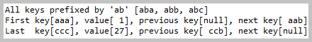
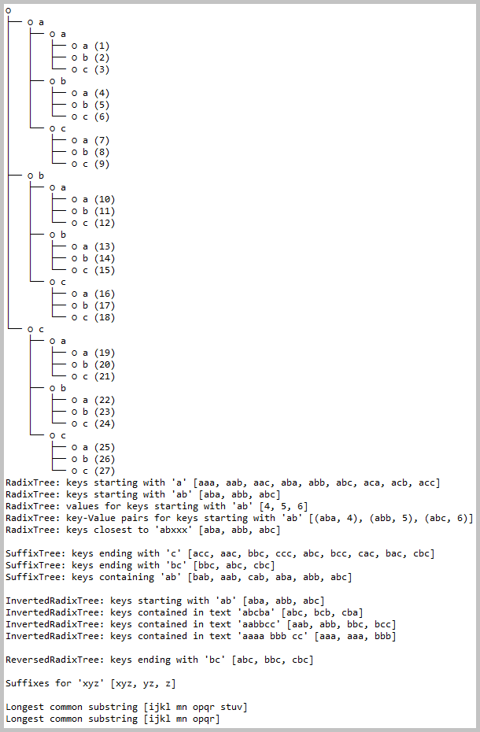
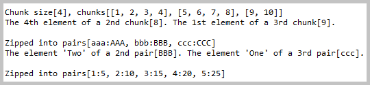
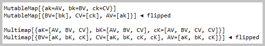
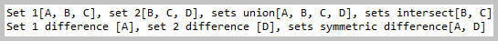
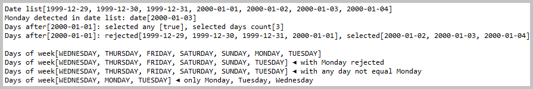
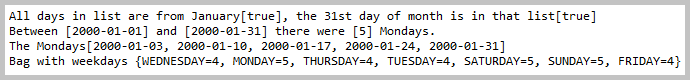
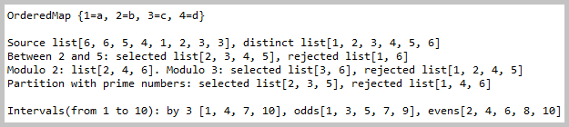

kp.ApacheCommonsCollections.java
kp.ConcurrentTrees.java
kp.EclipseCollections.java
kp.ApacheCommonsCollections.java
kp.ConcurrentTrees.java
kp.EclipseCollections.javaJava source code:
kp.ApacheCommonsCollections.java
kp.ConcurrentTrees.java
kp.EclipseCollections.java
Action:

 1. Launch application with kp.LibrariesAssay.main()
1. Launch application with kp.LibrariesAssay.main()

Console log from 'ApacheCommonsCollections.patriciaTrieRetrieval()' method.

Console log from 'ConcurrentTrees.launch()' method.

Console log from 'EclipseCollections.researchChunksAndPairs()' method.

Console log from 'EclipseCollections.researchMapFlipping()' method.

Console log from 'EclipseCollections.researchSetOperations()' method.

Console log from 'EclipseCollections.researchUsingDates_1()' method.

Console log from 'EclipseCollections.researchUsingDates_2()' method.

Console log from 'EclipseCollections.researchUsingNumbers()' method.